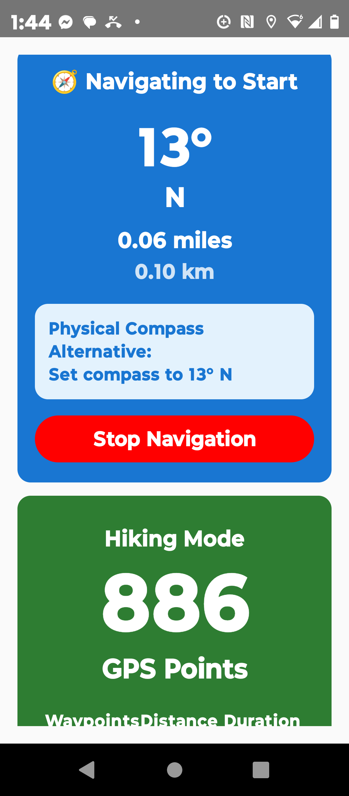
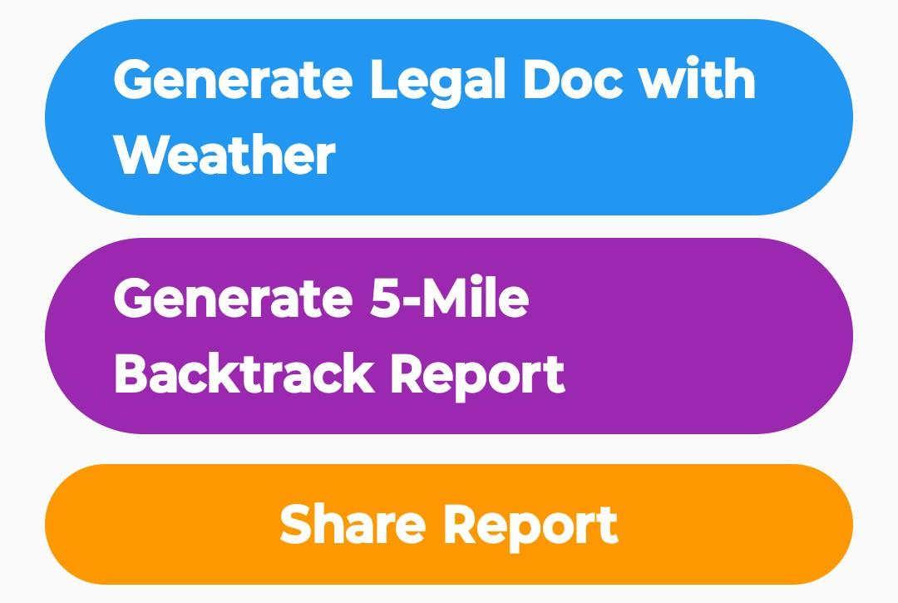
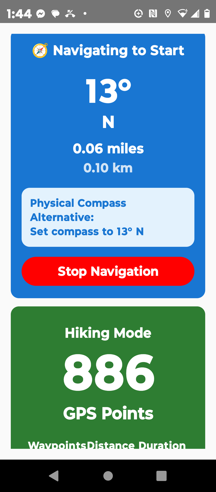
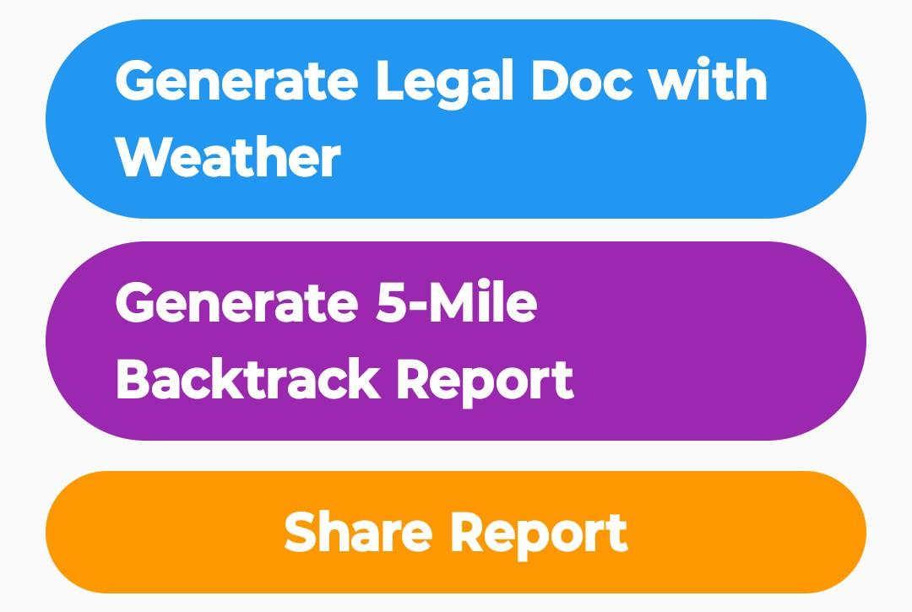

Key Benefits
?? GPS-Verified Accuracy
- High-precision location tracking with sub-meter accuracy
- Real-time speed calculations using advanced GPS algorithms
- Timestamped records with exact coordinates
- No estimation or guesswork ? only verified data
??? Complete Environmental Context
- Real-time weather conditions at time of recording
- Temperature, humidity, wind speed, and visibility data
- Weather-integrated reports for comprehensive documentation
- Essential context for personal tracking and analysis
?? Personal Documentation
- Generate detailed reports in seconds
- Comprehensive 5-mile route backtracking
- Clean formatting suitable for sharing and review
- Detailed analytics with maximum speeds, averages, and duration
?? Multi-Modal Tracking
- Driving Vehicle speed monitoring and safety awareness
- Running Jogging Athletic performance tracking
- Walking Fitness and pace monitoring
- Cycling Speed and route documentation
Primary Use Cases
?? Driving Applications
- Track Speed Limit Compliance
- Monitor Safe Driving Habits
- Review Personal Driving History
- Fleet Management Insights
?? Athletic & Fitness Applications
- Running Pace Analysis
- Training Optimization
- Race Preparation
- Trail Running Safety
?? Professional & Business Uses
- Commercial Transportation Monitoring
- Fleet Safety Programs
- Emergency Services Documentation
Real-World Scenarios
- Daily Commute: "Speed-Proof showed I was consistently under 25 MPH in school zones."
- Fitness Goals: "Exact split times proved my pace improvement over the year."
- Fleet Review: "Reduced incidents and improved driver accountability."
Why Choose Speed-Proof?
Precision You Can Trust
- Military-grade GPS accuracy
- Real-time weather integration
- Reliable documentation standards
Versatile Applications
- Personal and professional use
- Individual and fleet tracking
- Athletic and automotive contexts
User-Friendly Design
- One-tap start/stop tracking
- Automatic report generation
- Easy sharing and export
- Intuitive dashboard interface
 


